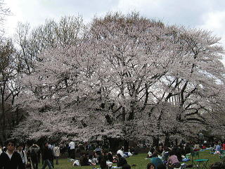
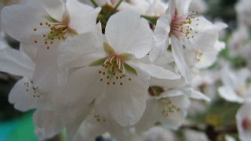

お花見
2009年もまたお花見の季節がやってまいりますね♪ 昨年は砧公園で満開の桜の木の下、皆でお弁当などを持ち寄ってワイワイ行いましたが、今年もやります！！ さて、今年はどうな風になるんでしょうかね～？去年同様、楽しいイベントになると思います＾＾皆様、是非奮ってご参加下さいね♪
「お花見開催します！」
本日ですが、お花見を結構いたします！
場所取りも住んでいますよ～
今日は最高のお花見日和です！！

詳細
日 時 ： 2009/4/5（日） 13：30～17時位
場 所 ： 千鳥ヶ淵公園 （東京都千代田区麹町1-2）
集 合 ： 13時 千鳥ヶ淵交差点 ※千鳥が淵公園の北西側、内堀通りと代官町通り
（皇居側へ入る道）の交差点

アクセス
東京メトロ半蔵門線 半蔵門駅5番出口 徒歩7分
東京メトロ有楽町線 麹町駅 徒歩12分

雨天時
飲み会のみになります。中止かどうか微妙な時は当日10時までに判断してブログに載せるので確認をお願いします。
雨天時集合
17時 地下鉄半蔵門線、半蔵門駅改札前
緊急連絡先：090-7018-5546（川島携帯）
予 算
食材費1000～1300円＋イベント参加費300円皆で持ち寄ったもの、買ったものなどを当日ワリカンします♪
＊料理を作ってくる方はレシートを持参してください。
＊イベント参加費について
イベントの開催に際して、ホームページ管理費、掲示板設置費、アシスタント補助費が
発生しています少しだけカンパしてあげてください(^^
＊お子様は食材費は1/3程度、イベント参加費は100円です
持ち物
あれば、以下のものを持ってきて下さい＾＾
・遊び道具（ボードゲーム、トランプ…等？）
・大きめのレジャーシート
・手料理♪好きな飲物、等
＊紙皿、コップ、割り箸は全体で用意する予定です。
改めて買う必要はありません。
ただし、特殊な料理（汁物等？）への対応用や
既に持っていて提供してくれる方は歓迎します。
（レシートの用意をお願いします）
参加資格
2年以内に講座に出席、又はOne Day セミナーに出席したことがある方キャンセル待ちの方、またはそのお友達、ご家族
参加方法
掲示板のコメント欄に参加表明を！！
※以下の件に協力してくれる人は掲示板で参加表明
する際に一言コメントをくれるとありがたいです♪
・手料理を作ってこれる人♪
（出来ればメニューも教えて下さい♪）
・当日早めに場所取りを手伝ってくれる人、若干名
・買出しを手伝ってくれる人（お皿、箸、コップ、飲物等）
参加〆切 ： 4/1（水）まで
（定員になりましたので締め切らせて頂きます）
定 員 ： 先着30名位